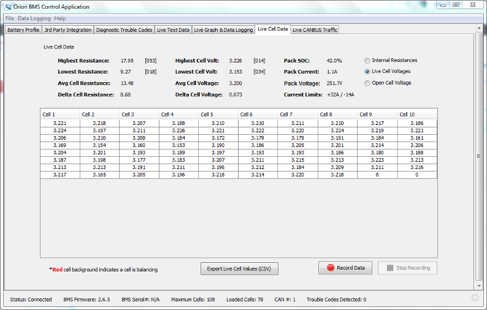

This screen provides access to live information from each of the cells being monitored in the pack. This information includes the real cell voltages, internal resistances and open cell voltages.
Note: A red background on a cell indicates that that particular cell is currently balancing. It does not mean that the cell is defective or out-of-range.
Available Information:
Available Commands / Actions:
| < Diagnostic Trouble Codes | Information > |